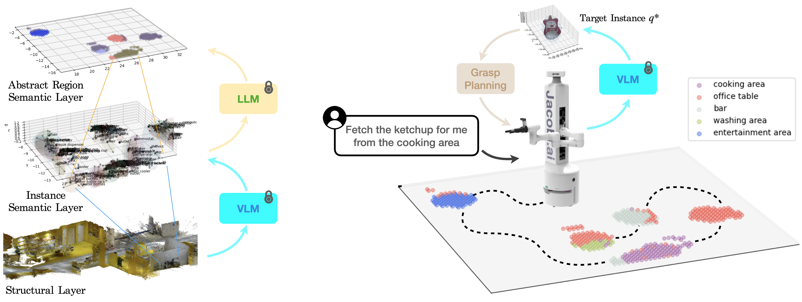

Open-Vocabulary Mobile Manipulation (OVMM) is a crucial capability for autonomous robots, especially when faced with the challenges posed by unknown and dynamic environments. This task requires robots to explore and build a semantic understanding of their surroundings, generate feasible plans to achieve manipulation goals, adapt to environmental changes, and comprehend natural language instructions from humans. To address these challenges, we propose a novel framework that leverages the zero-shot detection and grounded recognition capabilities of pretraining visual-language models (VLMs) combined with dense 3D entity reconstruction to build 3D semantic maps. Additionally, we utilize large language models (LLMs) for spatial region abstraction and online planning, incorporating human instructions and spatial semantic context.
We have built a 10-DoF mobile manipulation robotic platform JSR-1 and demonstrated in real-world robot experiments that our proposed framework can effectively capture spatial semantics and process natural language user instructions for zero-shot OVMM tasks under dynamic environment settings. Furthermore, the framework is capable of replanning towards the next most probable candidate location based on the spatial semantic context derived from the 3D semantic map when initial plans fail.
A 3-layer structured 3DSMap is built at the 3D semantic mapping stage, by leveraging heuristic exploration and feature-based SLAM to build the structural layer, using pre-trained VLMs and LLMs to extract instances from and propose region divisions for an environment to build the instance semantic layer and the abstract region semantic layer, respectively.
At the semantics-aware OVMM stage, a robot takes both region semantics from 3DSMap and user instructions as context to prioritize regions to search with LLMs and fetch the target object for the user.
An illustration of our real-world experiment on OVMM with the JSR-1 robot platform we built. (a) A sample run in our experiment. The robot receives a misleading instruction "fetch the controller from the washing area" from the user. Obeying the instruction given by the user, it prioritizes the "washing area" as the first region to search, where it fails to to find the target object. "entertainment area" follows as the next most relevant semantic region, where the robot successfully finds the target object, picks it up and then returns to the user. (b) The 5 regions in our experiment scene setup with 20 different categories of objects scattered within them conforming commonsense in daily life.
We have built a 10-DoF mobile manipulation robotic platform JSR-1 and demonstrated in real-world robot experiments that our proposed framework can effectively capture spatial semantics and process natural language user instructions for zero-shot OVMM tasks under dynamic environment settings, with an overall navigation and task success rate of 80.95% and 73.33% over 105 episodes, and better SFT and SPL by 157.18% and 19.53% respectively compared to the baseline. Furthermore, the framework is capable of replanning towards the next most probable candidate location based on the spatial semantic context derived from the 3D semantic map when initial plans fail, keeping an average success rate of 76.67%.
@misc{qiu2024ovmm,
title={Open-vocabulary Mobile Manipulation in Unseen Dynamic Environments with 3D Semantic Maps},
author={Dicong Qiu and Wenzong Ma and Zhenfu Pan and Hui Xiong and Junwei Liang},
year={2024},
eprint={2406.18115},
archivePrefix={arXiv},
primaryClass={cs.RO},
url={https://arxiv.org/abs/2406.18115},
}